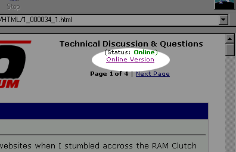

3.1 Viewing the online version
PFFCD detects when you are connected to the Internet. The Online Indicator at the
bottom right of the search window indicates if you are currently online or offline:
If you are online and view a thread, a link to the original thread on PFF is displayed
in the top-right corner of the browser window:

Clicking this link will take you directly to PFF on the Internet and to the thread in its
current status. This is particularly useful if you've found a thread in PFFCD and want to check
for any additional responses to the thread after PFFCD was released. Be aware though that
PFF archives threads when the last response to it is older than 6 months. So a thread
that resides in a non-archive forum on the CD, might be archived on PFF. In this case
clicking on the link will cause your browser to display a "Requested URL Not Found" or
"Page could not be displayed" error. In this case, the only way to view the online
version of the thread is by searching the online archives for it.